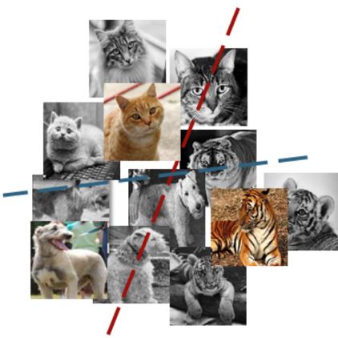
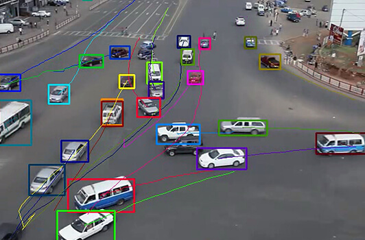
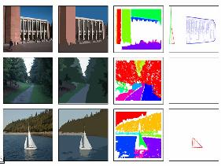

There is a lot of research being done in the computer vision field, but it’s not just research. Real-world applications demonstrate how important computer vision is to endeavors in business, entertainment, transportation, healthcare and everyday life. A key driver for the growth of these applications is the flood of visual information flowing from smartphones, security systems, traffic cameras and other visually instrumented devices.
Before we going down to specific applications, we need to first introduce some abstract functions of computer vision, which is the basic of those specific applications.
Image classification sees an image and can classify it (a dog, an apple, a person’s face). More precisely, it is able to accurately predict that a given image belongs to a certain class. For example, a social media company might want to use it to automatically identify and segregate objectionable images uploaded by users.

Object detection can use image classification to identify a certain class of image and then detect and tabulate their appearance in an image or video. Examples include detecting damages on an assembly line or identifying machinery that requires maintenance.
Object tracking follows or tracks an object once it is detected. This task is often executed with images captured in sequence or real-time video feeds. Autonomous vehicles, for example, need to not only classify and detect objects such as pedestrians, other cars and road infrastructure, they need to track them in motion to avoid collisions and obey traffic laws

Content-based image retrieval uses computer vision to browse, search and retrieve images from large data stores, based on the content of the images rather than metadata tags associated with them. This task can incorporate automatic image annotation that replaces manual image tagging. These tasks can be used for digital asset management systems and can increase the accuracy of search and retrieval.

Autopilot
Facial Recognition
Photo Translation
By combining several functions above, we can then use computer vision technique to solve actual problems!